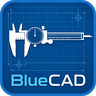

BlueCAD
A 2D CAD app for parts drawn to exact size — snap, units, holes, and an SVG you can take to the shop.

Drawing motif — not a screenshot. Open the app for the real canvas.
The problem
Shop classes taught me to read a print. I wanted a drawing tool that worked the same way: type the dimension, snap to a grid, and export something precise. A freehand sketch is not how you spec a bracket.
What I built
BlueCAD is that tool. It runs in the browser and as a Windows installer built with Electron. The browser copy is the drawing app, not a tour.
- Draw lines, rectangles, circles, ellipses, reference lines, arrows, and labels.
- Grid and snap, in millimeters or inches.
- Type exact dimensions instead of only dragging.
- Cut holes and attach a hole callout, including a thread note.
- Group and merge shapes so interior lines drop out.
- Dimension annotations and a title block.
- Undo and redo, save and load a JSON project, export SVG.
Sample projects in the build include a motor mounting bracket with a bore, bolt holes, and a title block. Those files live with the app — this page does not redraw them as if they were screenshots.
How to try it
Open the browser build and draw, or download the unsigned Windows installer. SmartScreen may warn. That is expected for a student-signed build; choose More info, then Run anyway, if you trust the source.